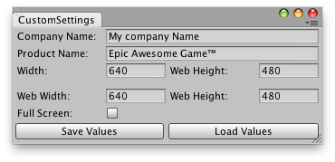

public static int defaultScreenWidth;
Description 描述
Default horizontal dimension of stand-alone player window.

Custom player settings.
using UnityEngine; using UnityEditor;
// Simple Script that saves and loads custom // Stand-alone/Web player screen settings among // Unity Projects
class CustomSettings : EditorWindow {
string compName = ""; string prodName = ""; int screenWidth = 640; int screenHeight = 480; int webScreenWidth = 640; int webScreenHeight = 480; bool fullScreen = false;
[MenuItem("Examples/Custom Settings")] static void Init() { var window = GetWindow<CustomSettings>(); window.Show(); }
void OnGUI() { compName = EditorGUILayout.TextField("Company Name:", compName); prodName = EditorGUILayout.TextField("Product Name:", prodName); EditorGUILayout.BeginHorizontal(); screenWidth = EditorGUILayout.IntField("Width:", screenWidth); screenHeight = EditorGUILayout.IntField("Web Height:", screenHeight); EditorGUILayout.EndHorizontal(); EditorGUILayout.Space(); EditorGUILayout.BeginHorizontal(); webScreenWidth = EditorGUILayout.IntField("Web Width:", webScreenWidth); webScreenHeight = EditorGUILayout.IntField("Web Height:", webScreenHeight); EditorGUILayout.EndHorizontal(); fullScreen = EditorGUILayout.Toggle("Full Screen:", fullScreen); EditorGUILayout.BeginHorizontal(); if (GUILayout.Button("Save Values")) SaveSettings(); if (GUILayout.Button("Load Values")) LoadSettings(); EditorGUILayout.EndHorizontal(); }
void SaveSettings() { PlayerSettings.companyName = compName; PlayerSettings.productName = prodName; PlayerSettings.defaultScreenWidth = screenWidth; PlayerSettings.defaultScreenHeight = screenHeight; PlayerSettings.defaultWebScreenWidth = webScreenWidth; PlayerSettings.defaultWebScreenHeight = webScreenHeight; PlayerSettings.defaultIsFullScreen = fullScreen;
EditorPrefs.SetString("CompName", compName); EditorPrefs.SetString("ProdName", prodName); EditorPrefs.SetInt("ScreenWidth", screenWidth); EditorPrefs.SetInt("ScreenHeight", screenHeight); EditorPrefs.SetInt("WebScreenWidth", webScreenWidth); EditorPrefs.SetInt("WebScreenHeight", webScreenHeight); } void LoadSettings() { compName = EditorPrefs.GetString("CompName", ""); prodName = EditorPrefs.GetString("ProdName", ""); screenWidth = EditorPrefs.GetInt("ScreenWidth", 640); screenHeight = EditorPrefs.GetInt("ScreenHeight", 480); webScreenWidth = EditorPrefs.GetInt("WebScreenWidth", 640); webScreenHeight = EditorPrefs.GetInt("WebScreenHeiht", 480); } }